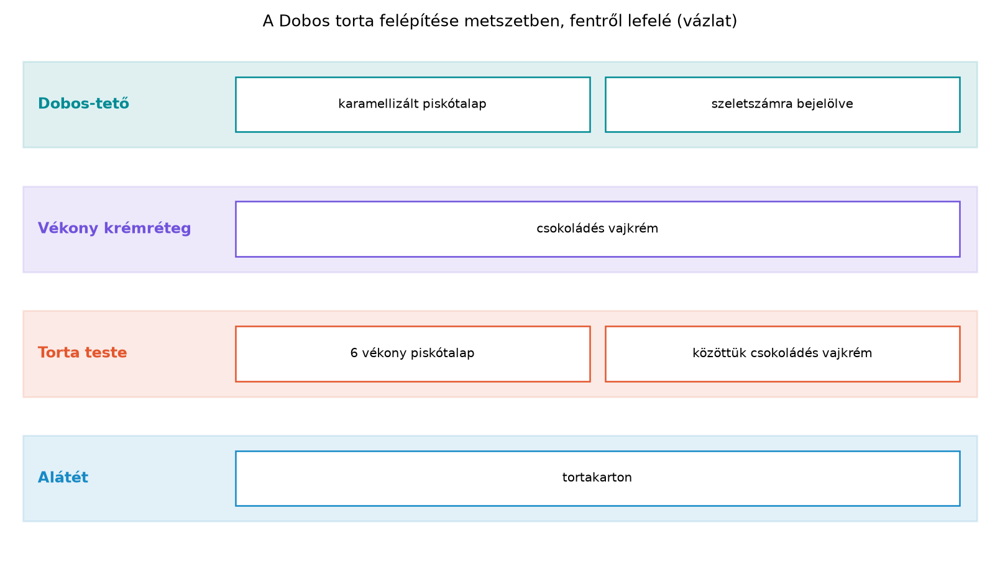
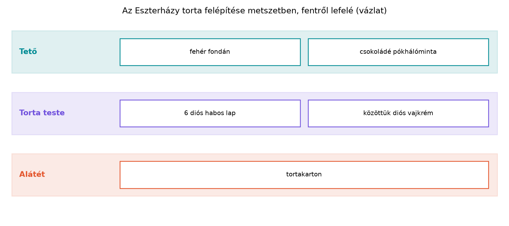

A cukrászüzemben a hagyományos magyar torták nem egyszerűen „receptek”, hanem olyan technológiai láncolatok, amelyekben a piskóta, a krém és a bevonat egymásra épül. Ha a Dobos torta karamelltetője nem ad szép, roppanó szeletet, vagy az Eszterházy fondánja fénytelen és a pókhálós minta összefolyik, a hiba majdnem mindig egy korábbi lépésben – a lap sütésében, a krém hőmérsékletében vagy a fondán temperálásában – keresendő. Ebben az alfejezetben először a felvert tésztás torták általános rendszerét tekintjük át, majd lépésről lépésre felépítjük a két ikonikus magyar tortát. A tanult technológiát később a További hagyományőrző és klasszikus magyar torták és az Alkalmi dísztorták tervezése és készítése alfejezetekben használjuk fel.
A két torta szerkezete metszetben jól mutatja, miért tartozik a felvert tésztás torták közé, de miért tér el a technológiájuk. Az alábbi két rétegábra fentről lefelé mutatja a rétegeket; az oldalburkolat körben, a torta oldalán van, nem alsó réteg.


A Dobos torta tehát sok vékony, külön-külön sütött piskótalapból és viszonylag kevés krémből áll, a tetején karamellréteg adja a jellegzetes arculatot. Az Eszterházy torta ezzel szemben diós habos lapokból áll, tetején fondánbevonattal és csokoládémintával. A rétegződés megértése azért fontos, mert a szeletelésnél és a díszítésnél is ehhez igazodunk.
Definíció. Felvert tésztás torta. Olyan kikészített sütemény, amelynek alapja felvert tészta: leggyakrabban tojáshabbal lazított piskóta (génoise), illetve diós, kakaós vagy más ízesítésű felvert lap. A tortalapokat – a torta jellegétől függően – egyben sütjük és rétegekre vágjuk, vagy vékony laponként sütjük, majd krémmel töltjük, bevonjuk és díszítjük.
Definíció. Hagyományőrző magyar torta. Olyan cukrászati készítmény, amelynek receptúrája, technológiája és megjelenése hosszabb idő óta rögzült a magyar cukrászati gyakorlatban. Az ilyen termékeknél az alapanyagok arányát, a rétegezést és a jellegzetes díszítést is meg kell őrizni; a fogyasztó ezt a nevet látva ezt a szerkezetet várja.
Definíció. Dobos torta. Hagyományőrző magyar torta, amelyet vékony, egyenletesen sütött piskótalapokból, csokoládés vajkrémmel rétegeznek; tetejét karamellizált cukorréteg (dobos-tető) fedi, oldalát pedig klasszikusan pirított, darált dióval vagy mandulával burkolják. A karamelltetőt még melegen vajas késsel szeletelik, így a torta később szép, egyenletes szeletekre vágható.
Definíció. Eszterházy torta. Hagyományőrző magyar (osztrák-magyar) torta, amelynek alapja diós habos lapokból áll (tojásfehérjés, cukros, diós massza); rétegeit diós vajkrém tölti, tetejét fehér fondánbevonó fedi, amelyre étcsokoládé húzott pókhálós mintát rajzolnak.
Továbbvitt eredmény. A Dobos és Eszterházy torta itt megtanult technológiája – a vékony lap sütése, a karamelltető készítése, a diós habos lap, a diós vajkrém és a fondán pókhálós mintázata – közvetlenül visszaköszön a További hagyományőrző és klasszikus magyar torták alfejezetben, és alapanyaga lesz a Alkalmi dísztorták tervezése és készítése feladatainak, ahol a vizsgán is gyakran kérnek Dobos vagy Eszterházy változatot.
A felvert tésztás torták alapja a tojáshab. A tojás fehérjéje a felverés során levegőt zár be, a cukor pedig stabilizálja a fehérjehálót. A piskóta készítését a Felvert tészták részben már részletesen tanultuk; itt a tortakészítés szempontjából a legfontosabb elveket ismételjük át.
A hagyományos tortalaphoz használt meleg úton készült felvert tészta előnye, hogy a tojás és a cukor enyhe melegítése (35–40 °C) segíti a cukor oldódását, és a hab finomabb, stabilabb lesz. A lisztet óvatosan, kézi habverővel vagy alacsony fokozaton forgatjuk a habba, hogy a levegő ne törjön ki. A kész tésztából azonnal sütjük a lapot, mert a hab idővel összeeshet.
A tortalapokat a felhasználás előtt legalább 2–3 órával, de inkább egy éjszakán át hűtve pihentetjük, hogy a morzsa megszilárduljon, és a vágáskor ne morzsálódjon. A hagyományos Dobos-lapoknál kivétel, mert azokat vékonyan sütjük, sütőpapírról levéve rácson néhány perc alatt teljesen kihűtjük, és még aznap rétegezzük; a vékony lapok gyorsan hűlnek, ezért nem kell őket éjszakán át pihentetni. Meleg lapra vajkrémet kenni tilos, mert a krém megolvad és a rétegek elcsúsznak.
A felvert tésztás torták csoportjai:
| Tortafajta | Lap alapanyaga | Jellemző töltelék | Bevonat/díszítés |
|---|---|---|---|
| Csokoládétorta | kakaós piskóta | csokoládés vajkrém, ganache | csokoládébevonó, forgács |
| Gyümölcstorta | vaníliás piskóta | gyümölcsös vajkrém, gyümölcs áztatás | tejszínes bevonat, gyümölcstükör |
| Diótorta | diós piskóta | diós vajkrém, sárgakrém | karamell, pirított dió |
| Dobos torta | vékony vaníliás piskóta | csokoládés vajkrém | karamelltető, pirított dió |
| Eszterházy torta | diós habos lap | diós vajkrém | fehér fondán, csokoládé pókháló |
A táblázatból látható: a Dobos és az Eszterházy is felvert alapú, de a lap jellege és a bevonat teljesen eltérő. Ezért a két terméket külön tárgyaljuk.
A Dobos torta névadója Dobos C. József cukrászmester, aki a tortát a XIX. század végén alkotta meg. A vékony lapok, a csokoládés krém és a karamelltető a szállíthatóságot és az eltarthatóságot is javította. A pontos eredeti receptúra cukrászattörténeti forrásokból ellenőrizendő; az alábbi mennyiségek a mai magyar cukrász gyakorlatban elterjedt tanulási receptet követik (ellenőrizendő: a hagyományőrző receptgyűjtemény pontos arányai).
A Dobos torta lapja vékony, rugalmas piskóta, amelyet külön-külön sütünk. A massza kissé hígabb, mint egy vastag tortalapé, hogy vékonyan kenhető legyen. A lap vastagsága kb. 3–5 mm. A sütő hőmérséklete magas, az idő rövid, így a lap gyorsan megsül, de nem szárad ki.
Szabály. A Dobos-lapok sütésénél mindig egyenletes vastagságot és egyenletes sütőlemez-hőmérsékletet biztosítsunk; a lapokat sütőpapírra, azonos méretre kenjük. A túl vastag lap nem veszi fel elegendő krémet, a túl vékony lap törik.
A lap sütési hőmérséklete jellemzően 210–230 °C, 4–6 perc laponként, de a pontos érték a kemence és a receptúra szerint változhat (ellenőrizendő: az iskola receptgyűjteménye és a berendezés).
A Dobos torta tölteléke csokoládés vajkrém. Alapja hagyományosan főzött sárgakrém (crème pâtissière jellegű, de gazdagabb, vajasra keverve), vagy tojáshabos vajkrém. Fontos, hogy a tojást hőkezeljük: a sárgáját cukorral és kis vízzel 80–85 °C-ra melegítjük, amíg sűrűsödik, majd kihűtjük. A puha vajat fokozatosan hozzákeverjük, végül az olvasztott étcsokoládét és kakaót. A krém akkor jó, ha fényes, sima, csomómentes, és hűtött állapotban is kenhető.
A krém hőmérséklete a betöltéskor 20–24 °C körül ideális; ha hidegebb, a lapokhoz nem tapad, ha melegebb, a krém folyik és a rétegek elcsúsznak (ellenőrizendő: üzemi technológiai utasítás).
A Dobos-tetőhöz a legszebb, legegyenletesebb lapot félretesszük. A karamellt a Karamell és olvasztott cukorkészítmények: dobos cukor, grillázs, cukorfesték alfejezetben tanultak szerint készítjük: kristálycukorból, száraz vagy nedves módszerrel, 160–180 °C-ra hevítve, amíg aranybarna lesz. A forró karamellt azonnal a lapra öntjük, és gyorsan, vajas késsel vagy sütőpapírral elsimítjuk. Még képlékenyen, forrón a lapot a torta szeletszámának megfelelően vajas késsel bejelöljük vagy átvágjuk. A vajas kés nem engedi a karamellt rátapadni a pengére.
Figyelem. A karamell hőmérséklete 160–180 °C körüli; bőrre kerülve azonnal mély égési sérülést okoz. A műveletnél hosszú ujj, kötény, száraz edényfogó kesztyű szükséges; a karamellt soha ne kóstoljuk forrón. A vajas kés használata a szeletelésnél is védi a kezet.
A kihűlt karamelltetőt a torta tetejére helyezzük. A tető roppanós, de nem üvegszerűen kemény; ez a karamell cukorösszetételének és a vajas kés által képzett vékony zsírrétegnek is köszönhető.
Az Eszterházy torta lapja nem hagyományos piskóta, hanem diós habos lap: tojásfehérje-cukor hab, amelyet darált dióval lazítunk. A tojásfehérjét félig felverjük, a cukrot fokozatosan hozzáadjuk, majd a darált diót és kevés lisztet óvatosan beleforgatjuk. A masszát sütőpapírral bélelt formába vagy szabadkézzel, vékony korongokra kenjük. A sütés alatt a hab kiszárad, a dió pörkölődik, a lap ropogós, mégis törhető lesz.
A lap sütési hőmérséklete alacsonyabb, mint a piskótáé: jellemzően 160–180 °C, 15–20 perc (ellenőrizendő: a dió pörkölődési hajlama miatt a sütőt figyelni kell). A túl magas hőfok megégeti a diót, keserű lesz a lap.
A diós vajkrém alapja sárgakrémből vagy főzött tojásos alapból készül, hasonlóan a Doboséhoz, de ízesítése diós. A legjobb hatást diópralinéval – pirított, karamellizált, darált dióval – érjük el, mert az intenzív pörkölt ízt ad. A vajat fokozatosan keverjük a kihűlt tojásos alaphoz, végül a diópralinét. A krém legyen sima, ne érződjön a cukor szemcséje.
Az Eszterházy torta tetejét fehér fondánnal vonjuk be. A fondánt a Fondán melegítése, hígítása és felhasználása bevonásra alfejezet szerint készítjük elő: 35–40 °C-ra melegítjük, és legfeljebb 5–15% hígító cukoroldattal állítjuk bevonási sűrűségre. A fondán hőmérséklete ne haladja meg az 50 °C-ot, különben a kristályszerkezet károsodik, és a bevonat fénytelen lesz.
A pókhálós mintához a még nedves, de nem folyó fondánbevonatra olvasztott étcsokoládéból vékony koncentrikus gyűrűket vagy sugarakat rajzolunk. Ezután egy hegyes pálcikával vagy kihegyezett késsel a középpontból a szélek felé, illetve a szélek felől a középpont felé felváltva húzunk vonalakat, megszakítva a csokoládé gyűrűket. Így alakul ki a jellegzetes pókhálós rajzolat. A művelet gyorsaságot igényel: ha a fondán megszárad, a csokoládé vonala már nem húzható.
Megjegyzés. A pókhálós minta hagyományos módszerét többféleképpen leírják; a lényeg a váltakozó irányú húzás, amely a pókháló sugarait adja.
Adott: 24 cm átmérőjű Dobos tortához 7 vékony lapot készítünk. A piskótamassza receptje: tojás 6 db (egyenként 50 g), cukor 180 g, liszt 180 g, olvasztott vaj 20 g. A sütési veszteség a massza tömegére számítva 15%.
Keresett: Mennyi tészta jut egy lapra sütés után, és mekkora a teljes kisült lapanyag tömege?
Számítás.
A tészta bruttó tömege:
A sütési veszteség:
A kisült lapok összes tömege:
Egy lapra jutó tömeg:
Ellenőrzés: 7 · 82,6 g = 578,2 g, ami a kisült össztömeggel egyezik. A 82 g-os lap megfelel egy vékony, 24 cm-es piskótalapnak.
Adott: A 24 cm átmérőjű Eszterházy torta tetejének bevonásához 350 g fehér fondán szükséges (a lecsorgó felesleggel együtt; ellenőrizendő: üzemi gyakorlat). Ugyanilyen módon 28 cm átmérőjű tortát szeretnénk bevonni.
Keresett: Mennyi fondán szükséges a 28 cm-es tortához?
Számítás.
Az Eszterházy tortán a fondán csak a tetőt fedi (az oldalt vajkrém és morzsa vagy mandula borítja), ezért a bevonandó felület a kör alakú tető: , ahol az átmérő.
A 24 cm-es torta teteje:
A 28 cm-es torta teteje:
A fondán mennyisége a felülettel arányos:
Ellenőrzés: A nagyobb torta teteje 1,361-szerese a kisebbnek, így a 476 g körüli mennyiség reális. A gyakorlatban mindig érdemes 5–10% tartalékot készíteni, mert a bevonat vastagsága és a lecsorgási veszteség változhat. (Ha a fondán a tetőn és az oldalon is van, például fondántortánál, az oldal területét is hozzá kell adni: .)
Jogszabály. A Dobos és Eszterházy torta – mint minden vajkrémes, tojásos, tejes kikészített sütemény – az 852/2004/EK rendelet (élelmiszer-higiénia) és a 1169/2011/EU rendelet (fogyasztói tájékoztatás) hatálya alá tartozik. Az allergének közül jelölni kell a glutént (búzaliszt), tojást, tejet (vaj, tejszín), dióféléket (Dobos oldala, Eszterházy dió) és esetleg szóját (ha az étcsokoládé szójalecitint tartalmaz). A fogyasztói tájékoztatásnak a termék tényleges összetételét kell tükröznie.
Higiénia. A vajkrémek hőkezelésénél gondoskodni kell a tojásos keverék legalább a gyártói útmutatóban meghatározott hőkezeléséről; nyers tojást tartalmazó, hőkezelés nélküli vajkrém a cukrászüzemben nem használható. A kész tortákat az összeállítás után hűtve kell tárolni 0–5 °C közötti hőmérsékleten (ellenőrizendő: az üzemi HACCP-terv és a NÉBIH útmutató szerinti érték). A Dobos-tető karamelljét nem szabad magas páratartalmú hűtőben, lezáratlanul tárolni, mert a nedvesség megpuhítja.
Kritikus pont. A betöltött, vajkrémes torta dermedési ideje és a hűtött tárolás hőmérséklete élelmiszerbiztonsági szempontból kritikus. Ha a hűtő hőmérséklete tartósan 5 °C fölé emelkedik, a krémet legfeljebb a HACCP-tervben rögzített időtartamig szabad felhasználni; utána selejtezni kell, a visszahűtés nem „menti meg” a már felmelegedett terméket.
Cél. A tanuló készítse el a Dobos tortát a hagyományos szerkezetnek megfelelően, és töltse ki a technológiai lapot.
Eszközök és anyagok. Habverő gép vagy kézi habverő, keverőtálak, habkártya, sütőlemez, sütőpapír, 24 cm-es tortakarika, kenőkés, fém tál, cukorfőző edény, maghőmérő, vajas kés, pirított darált dió.
Higiéniai munkakezdés. Munkaruha, hajháló, ékszer le, kézmosás; a munkafelületet és eszközöket fertőtlenítő szerrel áttörölni; a tojást, vajat, csokoládét átvenni és felhasználás előtt ellenőrizni.
Biztonsági korlát. A karamellfőzés és a lap karamellizálása forró cukorral jár; a műveletet oktatás után, felügyelet mellett, hosszú ujjban, edényfogóval végezd. Otthon kis adagban, háztartási tűzhelyen gyakorolj; gyerekek a közelben ne tartózkodjanak.
Termék: Dobos torta (felvert tésztás torta); alapmennyiség: 1 db 24 cm-es torta, 12 szelet.
| Részkészítmény | Nyersanyag | Mennyiség (g) | Megjegyzés |
|---|---|---|---|
| Tészta (7 lap) | Tojás 6 db (50 g/db) | 300 | |
| Cukor | 180 | ||
| Liszt | 180 | ||
| Olvasztott vaj | 20 | ||
| Részösszeg | 680 | nyers massza | |
| Csokoládés vajkrém | Tojássárgája 6 db | 110 | M-es tojás; ellenőrizendő: tömegosztály |
| Cukor | 120 | ||
| Víz | 40 | 40 ml | |
| Vaj | 300 | ||
| Étcsokoládé | 100 | ||
| Kakaópor | 10 | ||
| Részösszeg | 680 | ||
| Dobos-tető | Kristálycukor | 150 | |
| Víz | 20 | ||
| Vaj | – | a kés kenéséhez, kis mennyiség | |
| Részösszeg | 170 | ||
| Oldalburkolat | Pirított darált dió | 100 | |
| Összesen | 1 630 | főzési és sütési veszteség előtt |
Ellenőrzés: ; 12 szeletnél kb. 136 g/szelet (a sütési és főzési veszteség miatt a kész torta ennél könnyebb).
Eszközök: habverő gép, keverőtálak, sütőpapír, sütőlemez, tortakarika, cukorfőző edény, maghőmérő, vajas kés, kenőkés.
Műveleti sorrend
Piskótalapok készítése. A tojást és a cukrot vízfürdőn 35–40 °C-ra melegítjük, majd habosra verjük. A lisztet óvatosan beleforgatjuk, végül az olvasztott vajat. A masszát 7 egyenlő részre osztjuk, és sütőpapírra, 24 cm-es körlapokra kenjük. Sütés 210–230 °C-on, 4–6 percig. A lapokat hűlni hagyjuk.
Csokoládés vajkrém készítése. A tojássárgáját a cukorral és a vízzel 80–85 °C-ra melegítjük, amíg sűrű krémmé fő. Kihűtjük, majd a puha vajat adagonként hozzákeverjük, végül az olvasztott étcsokoládét és a kakaót. A krémet habosra keverjük, 20–24 °C-ra temperáljuk.
Összeállítás. A lapokat sorban vékonyan megkenjük a krémmel, a legszebb lapot félretesszük a tetőnek. A torta oldalát is bevonjuk, majd pirított darált dióba forgatjuk. Hűtőben dermesztjük 20–30 percig.
Dobos-tető készítése. A félretett lapra a 160–180 °C-ra melegített karamellt öntjük, gyorsan elsimítjuk, és vajas késsel azonnal 12 szeletre vágjuk. A kihűlt karamelltetőt a torta tetejére illesztjük.
Kritikus pontok és technológiai kulcspontok. A tojásos krém hőkezelése; a krém hőmérséklete a betöltéskor; a karamell forrósága (balesetvédelem); a hűtött tárolás 0–5 °C-on.
Allergének: glutén (búzaliszt), tojás, tej, diófélék, szója (csokoládéban lehet).
Minőségi jellemzők. A torta kerek, egyenletes magasságú; oldala dióval burkolt; a lapok vékonyak, krémmel jól telítettek; a karamelltető roppanós, szép fényű; a krém csokoládés, sima.
Tárolás, eltarthatóság. Hűtve 0–5 °C-on, lefedve; fogyaszthatóság a gyártástól számított 48 órán belül ajánlott (ellenőrizendő: a HACCP-terv szerinti idő).
Termék: Eszterházy torta (felvert tésztás torta); alapmennyiség: 1 db 24 cm-es torta, 12–16 szelet.
| Részkészítmény | Nyersanyag | Mennyiség (g) | Megjegyzés |
|---|---|---|---|
| Diós habos lap (6 db) | Tojásfehérje 10 db | 300 | |
| Cukor | 300 | ||
| Darált dió | 300 | ||
| Liszt | 20 | ||
| Részösszeg | 920 | ||
| Diós vajkrém | Tojássárgája 6 db | 110 | M-es tojás; ellenőrizendő: tömegosztály |
| Cukor | 120 | ||
| Víz | 40 | 40 ml | |
| Vaj | 300 | ||
| Diópraliné | 150 | ||
| Részösszeg | 720 | ||
| Fondánbevonat (csak a tető) | Fehér fondán | 350 | a lecsorgó felesleggel együtt |
| Hígító cukoroldat | 30 | 25–35 g (ellenőrizendő) | |
| Részösszeg | 380 | ||
| Dekoráció | Étcsokoládé, olvasztva | 30 | |
| Összesen | 2 050 | sütési veszteség előtt |
Ellenőrzés: .
Eszközök: habverő gép, keverőtálak, sütőpapír, sütőlemez, tortakarika, kenőkés, fondánmelegítő, hőmérő, hegyes pálca.
Műveleti sorrend (Eszterházy)
A tojásfehérjét félig felverjük, a cukrot fokozatosan hozzáadjuk, majd a darált diót és a lisztet beleforgatjuk. A masszát 6 vékony korongra kenjük, és 160–180 °C-on 15–20 percig sütjük. A lapokat hűlni hagyjuk.
A diós vajkrémet a Dobosnál leírt módon készítjük, de csokoládé helyett diópralinét adunk hozzá.
A kihűlt lapokat vajkrémmel rétegezzük, a torta tetejét és oldalát is bevonjuk, majd hűtőben dermesztjük.
A fondánt 35–40 °C-ra melegítjük, hígító cukoroldattal beállítjuk, és a torta tetejére mártjuk. Amíg a fondán nedves, étcsokoládé húzott gyűrűkből pókhálós mintát készítünk hegyes pálcikával.
A tortát hűtőben tároljuk, amíg a fondán megszilárdul.
Kritikus pontok. A diós lap sütése (pörkölődés); a vajkrém hőkezelése; a fondán hőmérséklete; a hűtött tárolás.
Allergének: glutén (liszt), tojás, tej, diófélék, szója (csokoládéban lehet).
Minőségi jellemzők. A diós lapok ropogósak, a krém sima, a fondán fényes, a pókhálós minta éles; a torta magassága egyenletes.
Tárolás. Hűtve 0–5 °C-on; a fondán nedvességre érzékeny, ezért zárt dobozban, páramentes hűtőben tartandó.
A kész tortáknál a minőséget érzékszervi vizsgálattal és tömegellenőrzéssel állapítjuk meg.
Dobos torta. A torta kerek, a szeletek egyenletesek. A lapok vékonyak, rugalmasak, a krémrétegek látszanak. A karamelltető aranybarna, fényes, roppanós, nem túl kemény. Az illat kellemes karamellás, csokoládés, diós. A krém édes-csokoládés, a vaj nem dominál. A szelet tömege a 12-es osztásnál jellemzően 120–150 g, de a receptúrától függ.
Eszterházy torta. A diós lapok ropogósak, nem keserűek; a diós vajkrém sima; a fondán fehér, fényes, a csokoládé minta éles kontúrú. A torta metszete határozott rétegeket mutat. A szelet tömege a 12–16 osztástól függően jellemzően 110–160 g, de a receptúrától függ.
Hiba 1: A Dobos-tető nem roppan, hanem ragad, nyúlik.
Tünet → a karamell nem törik, a vágásnál a krémhez tapad. Ok → a karamellt 160 °C alatt kezdtük el önteni, vagy a lapot nedves, párás helyen tároltuk. Megelőzés → a karamellt 160–180 °C-ra főzzük, a lapot közvetlenül a tálalás előtt helyezzük a tortára. Javítás → a már felpuhult tetőt nem érdemes újra karamellizálni; selejtezzük, és új tetőt készítünk.
Hiba 2: Az Eszterházy fondán fénytelen, foltos.
Tünet → a fehér bevonat matt, a csokoládé minta nem éles. Ok → a fondánt 50 °C fölé melegítettük, vagy túl sok hígító oldatot adtunk hozzá. Megelőzés → a fondánt vízfürdőn, hőmérővel 35–40 °C-ra melegítsük; a hígítót részletekben adjuk. Javítás → ha a hibás bevonat már megszáradt, a tortát újra kell vonni.
Hiba 3: A diós habos lap kemény, keserű.
Tünet → a lap sötétbarna, törékeny, kellemetlen ízű. Ok → a sütő hőmérséklete túl magas volt, vagy a lap túl vékonyra sikeredett. Megelőzés → 160–180 °C-on, inkább hosszabb idővel süssük, és a diót ne pirítsuk túl.
Hiba 4: A vajkrém csomós, vajdarabkák látszanak.
Tünet → a krém nem sima, a szájban zsíros csomók érezhetők. Ok → a vaj túl hideg volt, vagy túl gyorsan adtuk hozzá a meleg tojásos alaphoz. Megelőzés → a vajat szobahőmérsékletűre hagyjuk melegedni, és a tojásos alapot 25–30 °C-ra hűtjük, mielőtt a vajat hozzákezdjük. Javítás → óvatosan, alacsony fokozaton tovább keverhetjük, ha a hőmérséklet-különbség nem túl nagy.
Eset: Az Eszterházy torta pókhálós mintája összefolyik, a csokoládé elmosódott.
Tünet. A fondánbevonaton az étcsokoládé csíkok szétterülnek, a pókháló élei elmosódottak, a minta nem alakul ki.
Hipotézis. (1) A fondán túl meleg, ezért a csokoládé beleolvad, és szétfolyik. (2) Az étcsokoládé túl híg, mert túl melegítettük, vagy feleslegesen kakaóvajat adtunk hozzá.
Ellenőrzés. Hőmérővel megmérjük a fondán hőmérsékletét a bevonás pillanatában. Munkahőfok 35–40 °C; 40 °C fölött a fondán hígabb, a minta elfolyhat; 50 °C fölött a kristályszerkezet károsodik, a fény elvész (ellenőrizendő: gyártói adatlap). A csokoládé hőmérséklete 30–32 °C legyen; 35 °C fölött már túl híg.
Ok. A leggyakoribb ok a fondán túlmelegítése, illetve a csokoládé hozzáadása túl korai időpontban, amikor a fondán még nem kötött meg.
Javítás. Ha a minta elfolyt, de a fondán még nem kötött meg, a felületet palettakéssel lehúzzuk, és újra bevonjuk; megkötött fondánon a minta már nem javítható, a tortát újra kell vonni.
Megelőzés. A fondánt mindig hőmérővel ellenőrizve melegítsük; a csokoládét csak közvetlenül a minta rajzolása előtt olvasszuk meg, és ne forrósítsuk túl. A bevonatot néhány másodpercig pihentessük, hogy a felesleges fondán lecsorogjon, de a felső réteg még nedves maradjon.
Egy cukrászdában egy vendég 16 szeletes Eszterházy tortát rendel esküvőre. A torta elkészül, de a szállítás közben a fondánbevonat megreped, mert a tortát nem stabil dobozban, hanem sütőpapírral letakarva szállították, és a hűtőből kivéve a hőmérséklet-különbség gyors párakicsapódást okozott. A hiba elkerülhető lett volna, ha a tortát zárt, merev falú dobozban, hűtőtáskában vagy hűtött járműben szállítják, és a dobozt csak a helyszíni hűtőben nyitják ki; így nincs hirtelen hőmérséklet-változás és páralecsapódás, és a hűtőlánc sem szakad meg (ellenőrizendő: üzemi HACCP-terv). A tanulság: a hűtött vajkrémes tortát hűtve szállítjuk, a hűtőlánc megszakítása (hűtés nélküli „temperálás”) nem megoldás; a fondánbevonat és a vajkrém is érzékeny a páratartalomra és a hirtelen hőmérsékletváltozásra.
1. feladat (A). Határozd meg a Dobos torta és az Eszterházy torta közötti legalább négy különbséget: lap jellege, krém íze, bevonat, díszítés.
2. feladat (A). Írd le, miért kell a tojásos vajkrém alapot 80–85 °C-ra hőkezelni, és miért nem használhatunk nyers tojást.
3. feladat (B). A 24 cm-es Dobos torta piskótamasszája 680 g. A tanuló 5 lapot szeretne sütni ugyanabból a masszából. Hány g tészta jut egy lapra, ha sütési veszteséggel nem számolunk? Majd a sütés után a teljes tömeg 578 g lesz; mennyi a veszteség %-ban?
4. feladat (B). Az Eszterházy torta 24 cm-es méretéhez 350 g fondán kell. Számítsd ki, mennyi fondán kell a 30 cm átmérőjű tortához! A fondán csak a tetőt fedi, ezért a tető területével arányosíts!
5. feladat (C). Adott egy hibalista: „A Dobos-tető törékeny, túl kemény, a szeletelésnél üvegszerűen reped.” Mi lehet az ok? Hogyan javítanád a következő tételnél?
6. feladat (C). Tervezd meg az Eszterházy torta diós lapjainak sütési sorrendjét úgy, hogy a dió ne égjen meg. Milyen hőmérsékletet és időt választanál, és mit ellenőriznél sütés közben?
7. feladat (D). Készítsd el a Dobos tortát a Gyakorlati útmutató technológiai lapja alapján. Töltsd ki a lapot a saját mért adataiddal: a nyers tészta tömege, a kisült lapok száma, a krém hőmérséklete, a karamell hőfoka, a kész torta tömege. Értékeld: milyen lett a karamelltető, a rétegek, a szeletelés?
Önellenőrzés – válaszok
Feladatok megoldásai
1. feladat (A). Különbségek: (1) A Dobos lap vékony piskóta, az Eszterházy lap diós habos. (2) A Dobos krém csokoládés vajkrém, az Eszterházy diós vajkrém. (3) A Dobos teteje karamell, az Eszterházyé fehér fondán. (4) A Dobos oldala pirított dió, az Eszterházy tetején pókhálós csokoládéminta. (5) A Dobos torta hagyományosan 12–16 szeletes, az Eszterházy is hasonló, de a megjelenés eltér.
2. feladat (A). A vajkrém tojásos alapja tojássárgáját, cukrot és vizet tartalmaz; ezt 80–85 °C-ra kell melegíteni, mert így a tojásfehérjék kicsapódnak, és a keverék besűrűsödik, miközben a kórokozó baktériumok (pl. Salmonella) hőkezelést kapnak. Nyers tojást azért nem használhatunk, mert hőkezelés nélkül fertőzést okozhat.
3. feladat (B). Első rész: 680 g / 5 = 136 g/lap. Második rész: veszteség = (680 – 578) / 680 · 100 = 102/680 · 100 = 15,0%.
4. feladat (B). A fondán csak a tetőt fedi, ezért a tető területével számolunk: , . Arány: . Fondán: , tehát kerekítve 550 g.
5. feladat (C). Az ok: a karamellt túl magas hőfokra főztük (180 °C fölé), így a cukor túlzottan bomlott, a karamell üvegszerű. Javítás: a következő tételnél 160–170 °C-on álljunk meg, a karamellt öntsük azonnal, és a vajas késsel mielőbb szeleteljük. A túl kemény tetőt nem tudjuk megjavítani, selejtezzük.
6. feladat (C). A diós lapot 160–170 °C-on, 15–18 percig süssük, sütés közben figyeljük a színét: ne barnuljon sötétre. Ellenőrizzük a sütő hőmérsékletét, a lap vastagságát, forgassuk a tepsit félidőben, ha a sütő egyenetlen. A diót a sütés előtt ne pirítsuk túl, mert a lap sütése közben is tovább pörkölődik.
7. feladat (D). A gyakorlati feladatnál az értékelési szempontok: a lapok vékonyak, egyenletesek; a krém sima, csokoládés; a karamelltető aranybarna és roppanós; a torta kerek, magassága egyenletes; a szeletelés tiszta. A tanuló saját mért adatait rögzíti, és az eredményt összehasonlítja a technológiai lap adataival.
A felvert tésztás torták közé tartozó Dobos és Eszterházy torta technológiája a felvert tészta és a kikészítés elveire épül. A Dobos torta vékony piskótalapokból, csokoládés vajkrémből és karamelltetőből áll; a lapokat 210–230 °C-on sütjük, a karamellt 160–180 °C-ra főzzük, és vajas késsel szeleteljük. Az Eszterházy torta diós habos lapokból, diós vajkrémből és 35–40 °C-ra melegített fondánbevonatból készül, tetején étcsokoládé pókhálós mintával. Mindkét vajkrémet hőkezelt tojásos alappal, hűtött állapotban rétegezzük, és a kész tortát 0–5 °C-on tároljuk. Az allergének között glutén, tojás, tej, diófélék és esetlegesen szója szerepel. Továbbvitt eredmény. Az itt elsajátított vékony lap, karamelltető, diós lap, vajkrém- és fondánbevonási technika a További hagyományőrző és klasszikus magyar torták és az Alkalmi dísztorták tervezése és készítése alfejezetekben használt alapművelet.
Forrás típusok: magyar cukrász szakkönyvek és tankönyvek, cukrászipari szakmai testületi receptgyűjtemények, cukrászattörténeti szakkönyvek, NÉBIH jó higiéniai gyakorlat útmutatók, 852/2004/EK rendelet (élelmiszer-higiénia), 1169/2011/EU rendelet (fogyasztói tájékoztatás, allergének), gyártói adatlapok (fondán, étcsokoládé, pasztőrözött tojástermék).
Ellenőrizendő: a Dobos torta hagyományos lap- és krémreceptjének pontos arányai; a lapok sütési hőmérséklete és ideje; a csokoládés vajkrém felhasználási hőmérséklete; a karamelltető készítésének módszere; az Eszterházy lap sütési hőmérséklete és ideje; a fondánbevonat pontos hőmérséklete és a hígítóoldat aránya; a hűtött tárolás időtartama; a pirított dióval történő burkolat hagyományos vagy választható jellege.